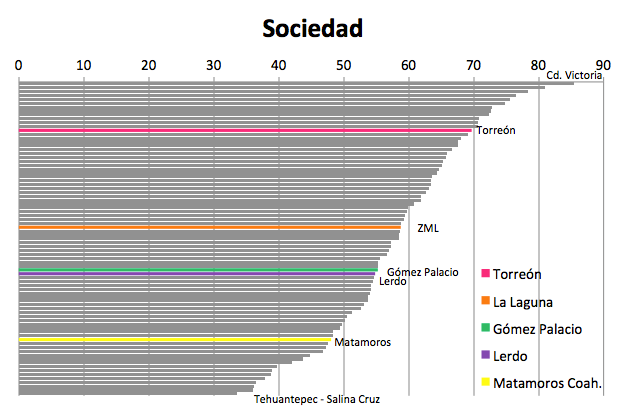
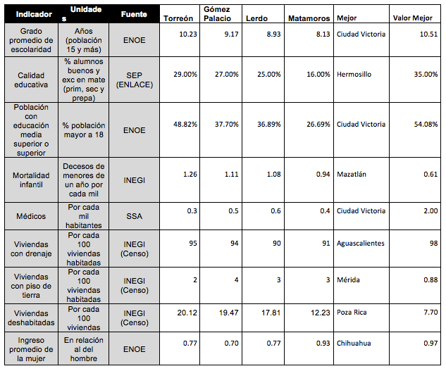

Sociedad Incluyente, Preparada y Sana
Por Lic. Rodrigo González Morales, 06/06/2014
Este es uno de los subíndices que muestra mayores contrastes al interior de la zona metropolitana, ubicándose Torreón en la parte alta del ranking, la ZML en su conjunto en media alta, Gómez Palacio y Lerdo en media baja y Matamoros en la zona baja.
El Grado Promedio de Escolaridad (GPE) muestra claramente esta diferencia ya que los torreonenses estudian en promedio dos años más que los habitantes de Matamoros y más de un año más que Lerdo y Gómez Palacio. En calidad educativa tomada de el porcentaje con resultados buenos y excelentes en matemáticas de la prueba enlace, se muestra mayor equilibrio entre Torreón, Gómez Palacio y Lerdo, no así Matamoros, que cuenta sólo con un 16 % de alumnos con calificaciones buenas y excelentes. El porcentaje de población con educación media superior y superior, es decir bachillerato o más, marca también amplia diferencia pues mientras casi la mitad de la población de Torreón cuenta con educación post-básica (48.82 %) solo 6 % menos que Cd. Victoria que es quien mejor registro muestra, en Matamoros es poco más de un cuarto de la población (26.69 %), mientras Gómez Palacio (37.70 %) y Lerdo (36.89 %), se encuentran en niveles intermedios similares a ciudades como Tapachula o Tula.
Sin embargo los indicadores relacionados a salud pública son los más vulnerables para Torreón dentro de este subíndice, ya que registra la mayor tasa de mortalidad infantil de la zona (1.26 decesos por cada mil nacimientos), mientras Matamoros presenta el mejor indicador de la ZML (.94), a pesar de ello los cuatro municipios y la ciudad en su conjunto se encuentran en niveles altos a nivel nacional. En cambio la medida de médicos por cada mil habitantes, coloca a la zona y a los cuatro municipios en niveles muy inferiores a las ciudades más competitivas en este aspecto como Cd. Victoria que registra 2 médicos por cada mil habitantes, y especialmente preocupante el caso de Torreón que registra .3 médicos por cada mil personas es decir apenas 3 médicos por cada 10 mil.
En cuanto a cobertura de servicios en la vivienda, la diferencia entre Torreón y el resto de los municipios vuelve a ser patente, ya que torreón cuenta con 95 % de viviendas con drenaje y sólo 2 % con piso de tierra, Gómez Palacio 94% y 4% con piso de tierra, que puede ser inducido por el territorio rural del municipio, Lerdo 90 % de viviendas con drenaje y 3 % con piso de tierra y Matamoros 91 % con drenaje y 3 % con piso de tierra.
Quizá uno de los indicadores más alarmantes para la Laguna según el ICU 2012, es la cantidad de viviendas deshabitadas, relacionado también con el crecimiento de la mancha urbana incluido en el subíndice de Gobierno, ya que refleja la expansión urbana y la presión de los servicios públicos, provocando el deterioro de inmuebles e infraestructura en la medida que se reduce la densidad poblacional de amplias zonas. La ZML presenta un 19.10 % de viviendas deshabitadas, estando entre las 8 peores ciudades a este respecto. Torreón presenta el mayor porcentaje con 20.12 %, Gómez Palacio 19.47 % y Lerdo 17.81%, Matamoros se desvía de la tendencia con 12.23%.
Por último la equidad salarial entre hombres y mujeres sitúa a la ZML alrededor de la media nacional de las ciudades en estudio, con ingresos de las mujeres de 78 % respecto a los de los hombres, y Torreón, Gómez Palacio y Lerdo con valores similares, mientras Matamoros muestra mayor equidad salarial con 93 % del ingreso promedio de las mujeres respecto al de los hombres.